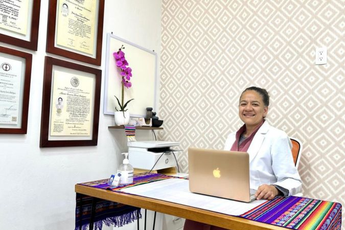

About Me
Hi! I'm Azu Garcia, an aspiring web developer passionate about coding and creating digital solutions. My goal is to transition from my current profession and fully embrace the world of web development, focusing on front-end and full-stack projects.